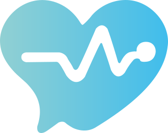

Telefone sempre ocupado
Pacientes ligam para confirmar horário, cancelar consulta, pedir preparo de exame e tirar dúvidas que poderiam ser resolvidas automaticamente.
O Ê-Bot Clinical automatiza agendamentos, confirmações, orientações, triagem inicial e lembretes via WhatsApp, sem tirar o controle da equipe de recepção.

Quando telefone, WhatsApp, agenda médica e financeiro operam separados, a equipe perde tempo em tarefas repetidas e o paciente espera por respostas simples.
Pacientes ligam para confirmar horário, cancelar consulta, pedir preparo de exame e tirar dúvidas que poderiam ser resolvidas automaticamente.
Sem lembretes e confirmação ativa, a agenda parece cheia no sistema, mas chega vazia no consultório.
Atendentes precisam procurar histórico, convênio, profissional, agenda e status financeiro antes de dar uma resposta segura.
O paciente conversa no canal que já usa. O Ê-Bot consulta regras, agenda, disponibilidade e histórico para resolver ou encaminhar com contexto.
Agendar, remarcar, confirmar, pedir receita, consultar preparo ou falar com humano.
Valida convênio, especialidade, agenda médica, documentos e políticas da unidade.
Confirma horário, envia orientação, abre solicitação ou entrega o caso para a recepção.
Lembra o paciente, mede satisfação e reduz faltas com mensagens no momento certo.
tempo médio de espera
Pacientes chegam com confirmação e orientação prontas.
faltas em consulta
Lembretes e confirmação ativa antes do horário.
confirmações antecipadas
Mais previsibilidade para médicos e recepção.
atendimento contínuo
Mesmo fora do expediente, sem sobrecarregar equipe.
Você escolhe o que automatizar. O Ê-Bot pode começar por agendamentos e evoluir para triagem, receitas, financeiro e painel de gestão.
Sincronização com disponibilidade real para marcar, remarcar e cancelar consultas com regras da unidade.
Coleta sintomas, prioridade e especialidade antes do atendimento humano.
Confirma presença, envia preparo e libera horários quando há cancelamento.
Organiza solicitações de renovação, exames, anexos e orientações.
Acompanhe volume de conversas, motivos de contato, taxa de confirmação, horários críticos e demandas transferidas para humanos.
Quando precisa de humano, a conversa chega resumida e com contexto.
O Ê-Bot Clinical atua como uma camada controlada de atendimento, com registros, regras de encaminhamento e integração sob medida com a realidade da unidade.
A implantação é pensada para não travar a rotina da recepção.
Levantamos canais, dúvidas frequentes, agenda, regras e pontos de transferência para humanos.
Montamos fluxos, tom de voz, base de conhecimento e integrações prioritárias.
Ativamos um fluxo controlado, monitoramos conversas e ajustamos respostas.
Relatórios mostram gargalos, horários críticos e novas automações recomendadas.
Converse com o Ê-Bot Clinical e veja como ele explica automações, agenda, lembretes e implantação para a sua operação.
Da Unidade Básica de Saúde ao hospital particular. Reduza filas, faltas e custos administrativos sem trocar toda a sua operação.